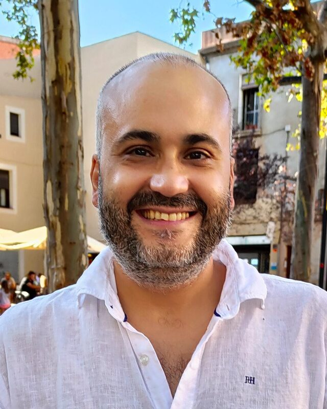

Javier Vazquez-Corral
Associate Professor, Universitat Autònoma de Barcelona
Leader of the Color Group, Computer Vision Center
I am an Associate Professor at Universitat Autònoma de Barcelona and a Research Scientist at the Computer Vision Center, where I lead the Color Group. I have developed novel approaches to problems ranging from color constancy to color stabilization, color characterization, color gamut mapping, high dynamic range imaging, image dehazing, image denoising, and vision color properties such as unique hue prediction and color naming.
I have published more than 90 papers, including in top-ranked venues and journals: CVPR, ECCV, ICCV, IEEE-TPAMI, IEEE-TIP, PR, and SIAM-SIIMS. I have a European patent granted, a second application in process, and research experience in cutting-edge labs in Spain, the UK, Canada, and Switzerland, working in high-profile research projects. I have extensive experience teaching undergraduate and master's courses in Spain and the UK, with more than 1,100 hours of teaching.
Computer Vision Center, Edifici O, Carrer de les Sitges s/n08193 Cerdanyola del Vallès, Barcelona, Spain
Publications
No papers match your filter.
Appointments
- 2021–now
Associate Professor Universitat Autònoma de Barcelona
- 2021–now
Senior Researcher Computer Vision Center, Barcelona
- 2025–2028
Adjunct Professor Université Laval, Québec City, Canada
- 2020–2023
Honorary Lecturer University of East Anglia, Norwich, UK
- 2020–2021
Postdoctoral Researcher (Jóvenes Investigadores) Universitat Pompeu Fabra, Barcelona
- 2019–2020
Postdoctoral Researcher Universitat Pompeu Fabra, Barcelona
- 2018–2019
Senior Research Associate University of East Anglia, Norwich, UK
- 2016–2018
Postdoctoral Researcher (Juan de la Cierva-Incorporación) Universitat Pompeu Fabra, Barcelona
- 2014–2016
Visiting Lecturer Universitat Pompeu Fabra, Barcelona
- 2012–2014
Postdoctoral Researcher Universitat Pompeu Fabra, Barcelona
- 2011–2012
Postdoctoral Researcher Universitat Autònoma de Barcelona
- 2011
Postdoctoral Researcher EPFL, Lausanne, Switzerland
- 2011
Associate Tutor University of East Anglia, Norwich, UK
- 2008–2010
Associate Lecturer Universitat Autònoma de Barcelona
- 2006–2008
PhD Student Fellow Universitat Autònoma de Barcelona
Education
- 2011
PhD in Computer Science Universitat Autònoma de Barcelona. Colour constancy in natural images through colour naming and sensor sharpening, advised by M. Vanrell and G. D. Finlayson. Cum laude, European mention.
- 2007
MSc in Advanced Computer Science Universitat Autònoma de Barcelona
- 2006
BSc + MSc in Mathematics (Licenciatura) Universitat de Barcelona
Research stays
- 2022–2023
Invited Scholar York University, Toronto, Canada
- 2011
Visiting Postdoctoral Researcher Simon Fraser University, Vancouver, Canada
- 2010
Visiting Student University of East Anglia, Norwich, UK
- 2009
Visiting Student University of East Anglia, Norwich, UK
Service
Associate Editor International Journal of Computer Vision, since 2015
Area Chair CVPR 2025 and 2026, ECCV 2024 and 2026, WACV 2024 to 2027
General Chair Color and Imaging Conference 2024, London Imaging Meeting 2020
Program Chair Color and Imaging Conference 2023
Series Chair London Imaging Meeting 2025 and 2026